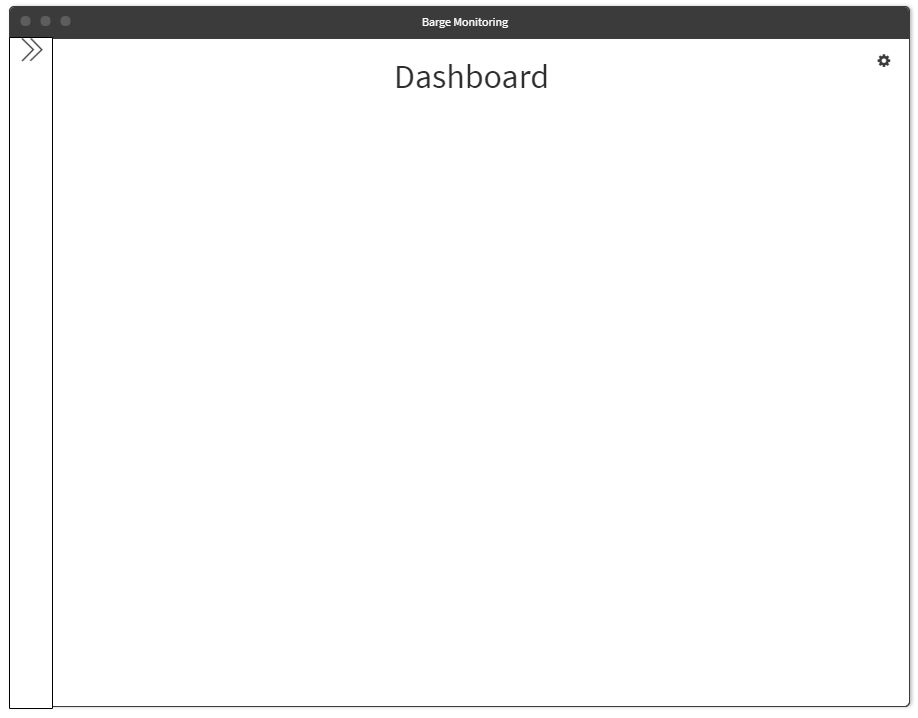
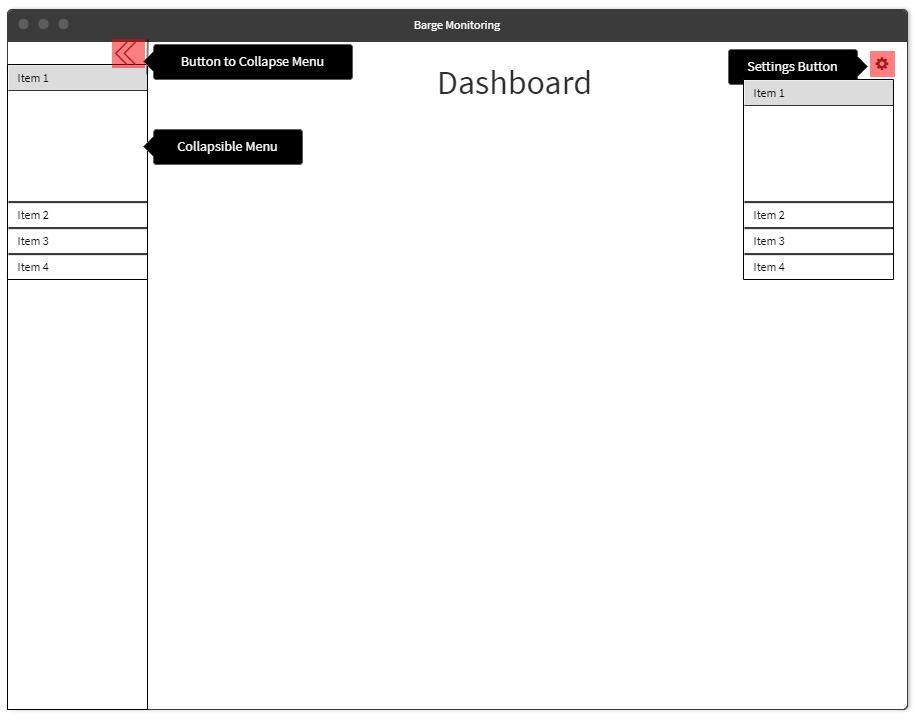
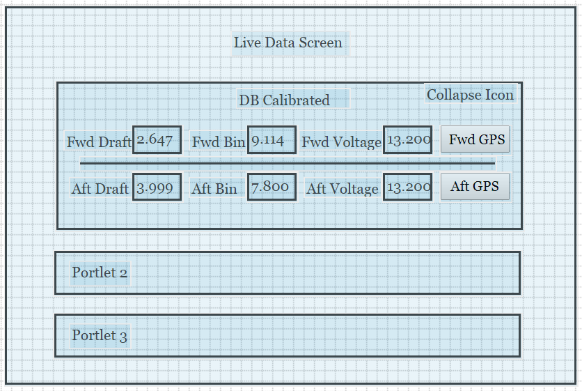

The main aspect of this application is data and the nature of data. There is large amount of data for display and edit. And more importantly the frequent of data loading is very high. The data needs to be updated in real time. This is a big challenge in itself.
I have experience in working with application that requires data to be updated in high frequency so I can say that any inefficiency in the system is soon going to scale to an unmanageable proportion very quickly. That is why it is important to make the system simple and highly efficient as possible.
It is always better to reduce the number of queries to server as much as possible and attempt will be made to do so. I assume that the Urls that you will be providing will return data for a unit element. But if possible I suggest to combine the two or more data sets and return using single Urls. This will reduce the number of required queries and will improve the performance of the app.
I am not aware of the methodology of how the data is received from the server in desktop application. Before we can update the value on front end once it changes in server, we need to detect that change. For that we need to continuously poll for change in value to the server. This is a resource hungry step but also the crucial one. The more we poll for data the more the data reflect the real time data but it has huge overhead. So we need to find the best point between real timeness and load on server and front end. For eg. we can load data change every 5 seconds. If we do it every second, it will not only put heavy load over server but also the rendering on front end may not get updated so fast.
We have 2 options when it comes to approach, either to make it like a Single Page Application (SAP) and use tab like how it is done in desktop version or to make the application with separate page for each tab. The later method requires to load page every time we switch between the tabs but this system is quicker to develop as compared to SAP. The application of Rules was built as a SAP.
>My attempt will be to show as least information on the screen as possible. There will be toggles, tabs and panels to switch between the views and data as required. The tabs on the desktop version will be applied as as collapsible side bar navigation menu. That way we consume only a fraction of space for navigation menu. The elements of the tabs can be further divided into the sub menus where possible.

The Dashboard area will show some important index if any. If we don't have such necessity then we can show the content of first menu item.
Every separate elements and piece of information group will be placed within a panel, a portlet. Each portlet can be collapsed. This way we can give maximum screen to the component in focus. The position of protlet can also be switched and if needed they can be resized as well.

The Live Data Screen will be the first menu item on the list.
